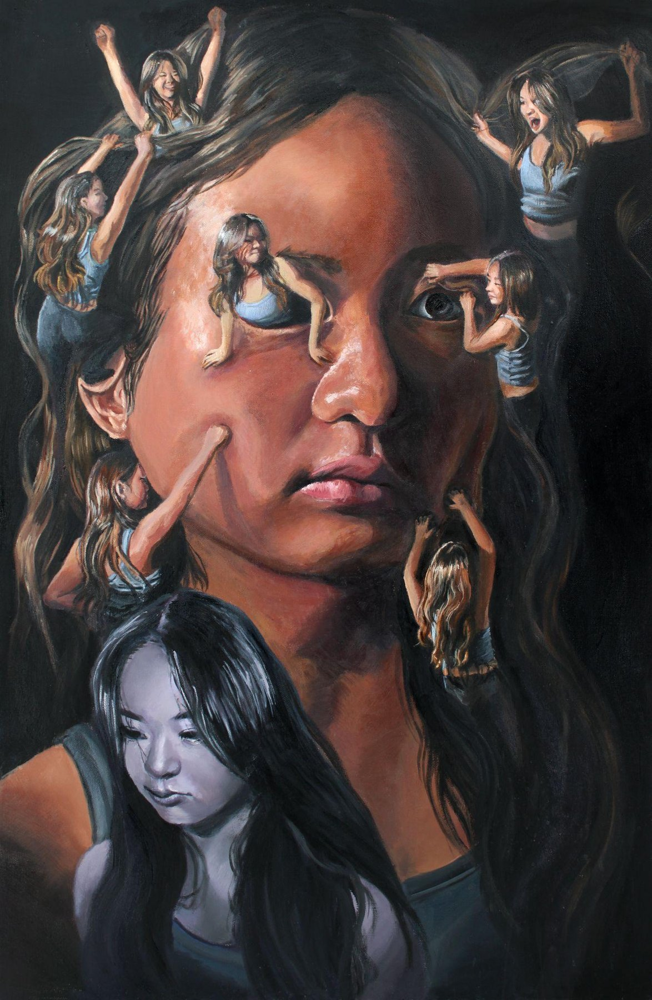

I

Invisible Circus
My mind often houses an invisible circus of competing thoughts and impulses. I redefine my relationship with my own visage by processing all my internal and external thoughts, impulses, and sensations through art in an introspective yet playful process.